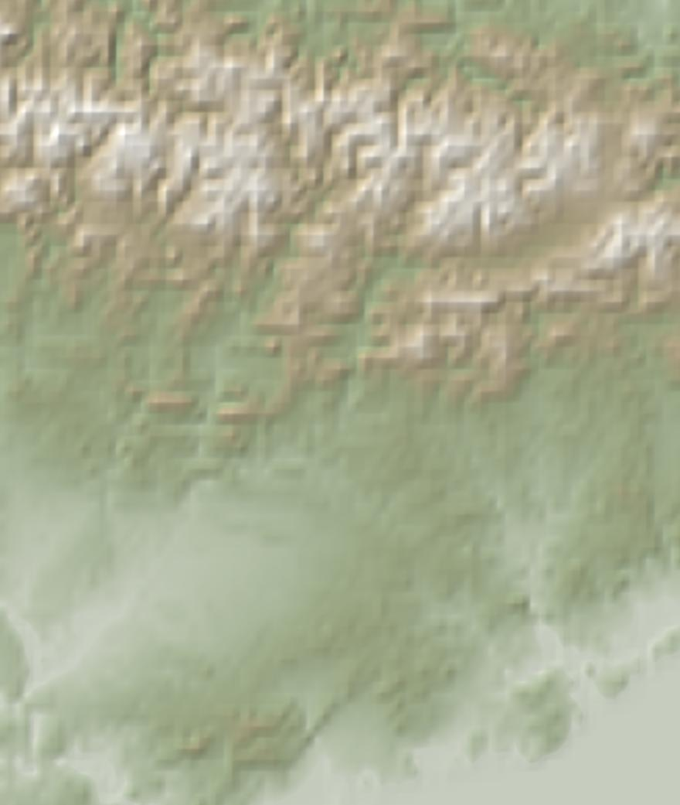

Este fin de semana
Las tres mejores zonas. Toca una para ver el detalle.
Los próximos 10 días
Mejor puntuación de cada zona, ordenadas por cercanía. Toca una casilla para abrir ese día.
65 o más40 a 64menos de 40sin datos todavía
Avisos
Temporada
Viaje
Especie
Orden
Especie

Mapa: © OpenStreetMap, SRTM · OpenTopoMap (CC-BY-SA)
Arrastra para moverte y pellizca o usa + y − para ampliar. Toca una zona para ver su detalle.